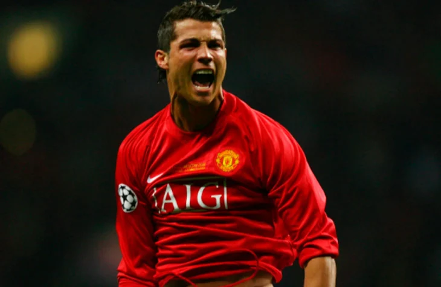
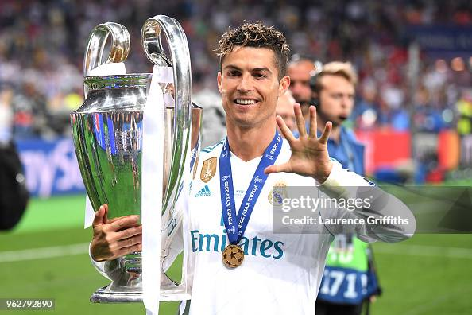
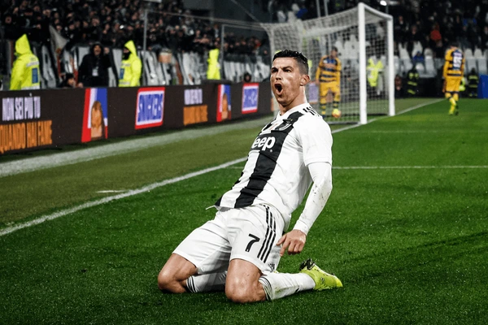
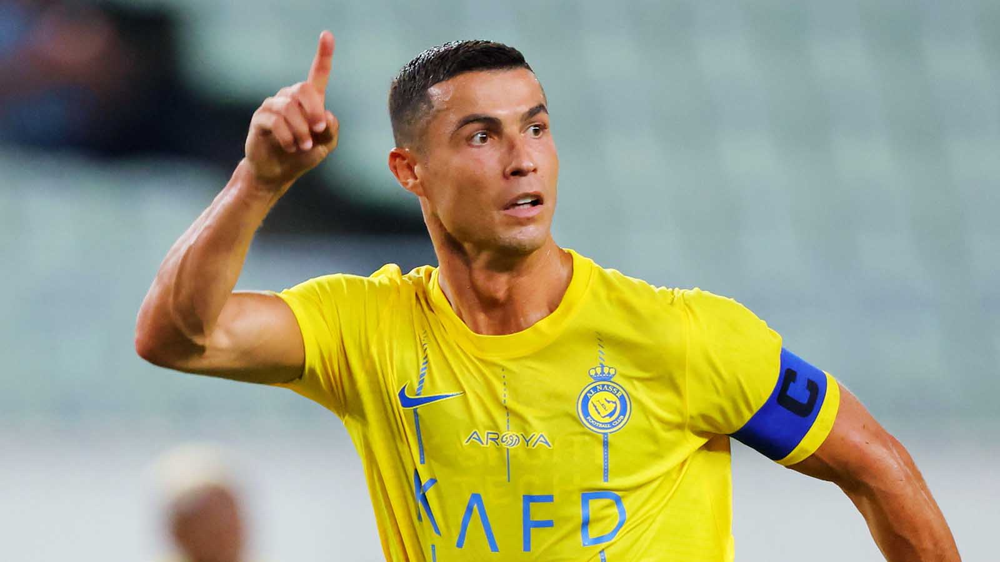
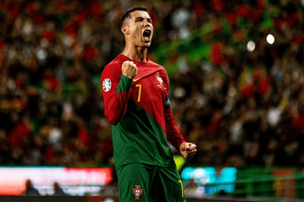

Futbolista Profesional
Cristiano Ronaldo dos Santos Aveiro, nacido en Funchal (Madeira, Portugal) el 5 de febrero de 1985, es considerado uno de los mejores futbolistas de todos los tiempos. Su disciplina, talento y mentalidad lo han llevado a destacar en cada equipo donde ha jugado.
Desde muy joven mostró una determinación inquebrantable para alcanzar la excelencia, superando obstáculos personales y profesionales. Su ética de trabajo, dedicación y pasión por el fútbol lo han convertido en un referente mundial, tanto dentro como fuera del campo. Además de su éxito deportivo, Cristiano es conocido por su labor filantrópica y su influencia positiva en millones de seguidores alrededor del mundo.
Ha sido ganador de múltiples Balones de Oro, títulos de liga, Champions League y récords históricos. Además, es capitán de la selección de Portugal, con la que ganó la Eurocopa 2016 y la Nations League 2019
A lo largo de su carrera, ha roto numerosos récords de goles y ha sido reconocido por su capacidad de liderazgo y su constancia en el alto rendimiento. Su legado trasciende el deporte, inspirando a nuevas generaciones a perseguir sus sueños con esfuerzo y determinación.




